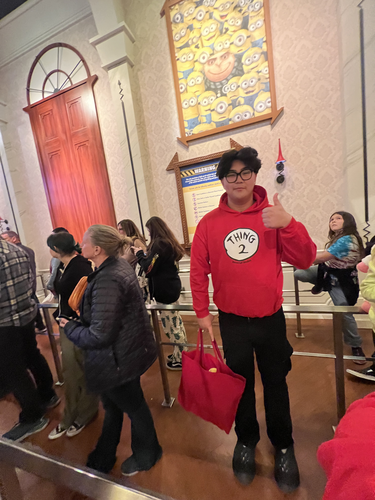
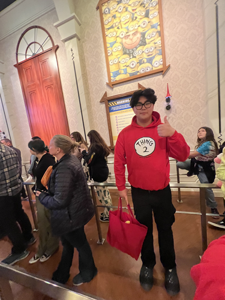

Portfolio of Jacob Ganburged
 

About Me
I am a 2nd year Computer Science Game Design Student! I am from Oakland, California. I love to play games such as Valorant, League, TFT. I promise I am not toxic😂😂 Some other hobbies I have are cooking, sleeping and snowboarding! Some things I like are minions, clothes,shoes, and anime. I also love going on hikes and visiting view points all around the bay.